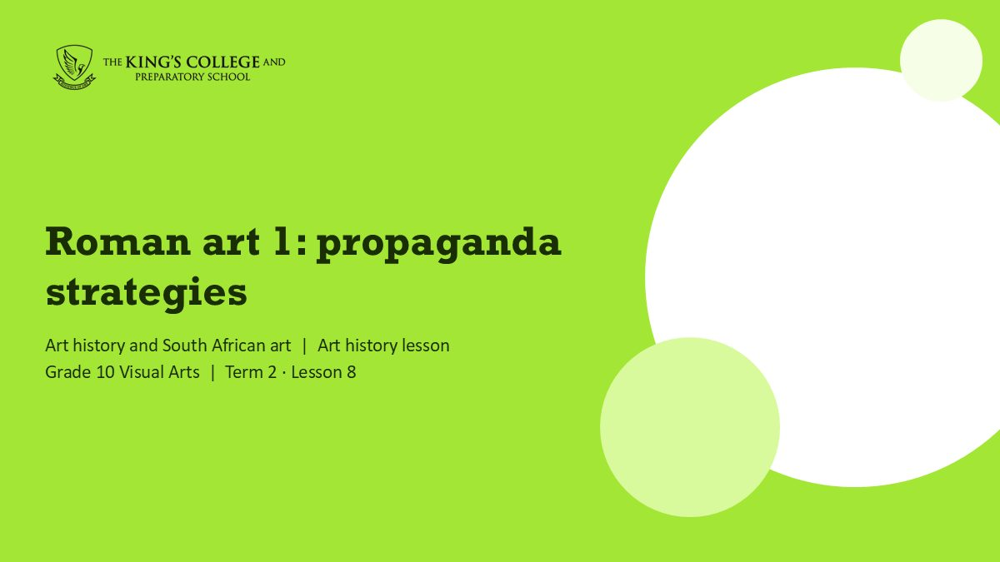

Term 2 · Lesson 8 · Art history lesson
Roman art 1: propaganda strategies
Start here
Today I will
- Explain what propaganda is and who uses it
- Identify five propaganda strategies in Roman art
- Find a present-day South African example
Where have you seen a leader's face this week: on a coin, a poster, a screen? What were you meant to think about that person?
Words to know
- Propaganda
- Images or messages designed to persuade people to support a ruler, institution or idea.
- Idealisation
- Showing a person as more perfect, young or calm than they really are.
- Symbol
- An image or object that stands for an idea, such as an eagle for power.
- Patron
- The person or institution who commissions and pays for an artwork.
- Power
- The ability to control or influence people and events.
Slides

Videos
Notes
Art and power: propaganda strategies (scale, idealisation, repetition, symbols, setting) and how Rome used them.
Five strategies of power
- Scale: Size suggests might: huge buildings and larger-than-life statues make the ruler or state feel overwhelming.
- Idealisation: The ruler looks young, calm, fit and in control, whatever his real age or health.
- Repetition: The same face or message appears again and again: on coins, statues and buildings across the empire.
- Symbols: Objects carry the message: laurel wreaths, eagles, armour, gods and sacred signs.
- Setting: Art is placed where everyone sees it: forums, gateways, roads and public squares.
How Rome used them
| Strategy | Roman example |
|---|---|
| Scale | The Colosseum held about 50 000 people and showed the emperor's generosity in stone. |
| Idealisation | The Augustus of Prima Porta shows the first emperor as an ageless, perfect general. |
| Repetition | Portraits of Augustus were copied in statues and on coins throughout the empire. |
| Symbols | Augustus's breastplate shows a diplomatic victory; the small Cupid links his family to Venus. |
| Setting | Trajan's Column (113 CE) stood in his forum, telling his victories in a spiral frieze. |
Propaganda does not lie loudly; it persuades quietly through size, beauty, repetition, symbols and place.
Practical
You need: History booklet, propaganda handout, VJ
Reading propaganda in the Augustus of Prima Porta
- Describe: write the title, date (early 1st century CE), medium (marble, originally painted) and what you see.
- Analyse: find the pose, gesture and balance. Which Greek sculpture does the pose borrow from?
- Interpret: list every symbol you can find and say what each tells the viewer about Augustus.
- Match each of the five strategies to evidence in the statue, or say why it is missing.
- Opinion: is this statue more truthful or more persuasive? Give two reasons.
- Choose one strategy to research tonight and find a present-day South African example to share next lesson.
Test yourself
- Define propaganda in one sentence.
- Identify two propaganda strategies used in the Augustus of Prima Porta and give the evidence for each.
- Explain why repetition was important for a ruler of a large empire.
Show answers
1. Images or messages designed to persuade people to support a ruler or idea. 2. For example, idealisation (young, perfect body and face) and symbols (breastplate scene, Cupid linking him to Venus). 3. Most people would never see him in person, so repeated images on coins and statues made him present everywhere.
Finished early?
Use Rome's strategies to design a coin for a ruler.
- Draw two circles about 6 cm wide in your VJ: the front and back of a coin.
- On the front, draw an idealised profile portrait with a laurel wreath.
- On the back, draw one symbol of power, such as an eagle.
- Label which propaganda strategies your coin uses and why coins helped repetition.